ORQUEST AI
Storyboard del comercial para conseguir gente que ayude a desarrollarlo. Las pantallas salen del diseño en Pencil (oirquestai.pen), exportadas a promo/pen/.
Ojo antes de producir: la oficina del diseño (cuartos rotulados: Backend, QA, Recepción…) no es la que hoy trae la app (seis cuartos sin rótulo, con calle a los lados). Si el video usa la del diseño, enseña algo que el visitante no va a encontrar tal cual al instalarla. Abajo marco en qué tomas pasa y la alternativa.
Storyboard · 45 segundos
$ claude ▌ $ codex ▌ ← cuatro terminales $ agy ▌ que se enciman $ opencode ▌ hasta tapar todo
El problema
- Se ve
- Pantalla negra. Aparecen cuatro terminales, una por una, con texto corriendo. Se enciman.
- Voz
- ¿Cuántas terminales tienes abiertas ahorita?
- Movimiento
- Cada terminal entra con un golpe seco; la cámara tiembla un poco con la cuarta.
- Origen
- No hay pantalla en el pen: se arma con tipografía. Usa la fuente y los colores del diseño.
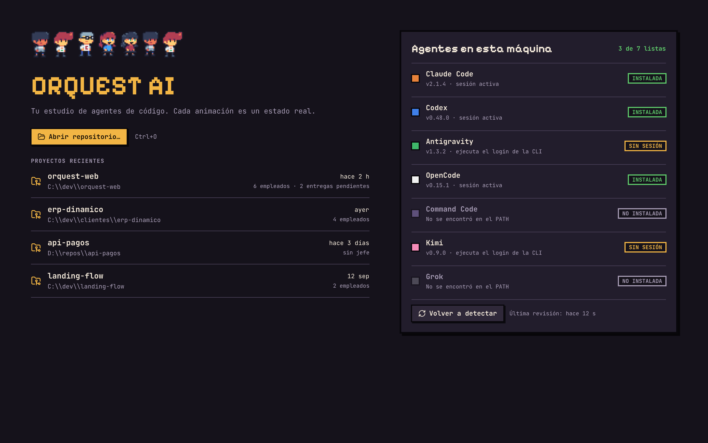
01-inicioAparece Orquest
- Se ve
- Las terminales se encogen y caen sobre la fila de personajes de Inicio. Queda la pantalla de Inicio: el nombre, los proyectos y los agentes detectados en la máquina.
- Voz
- ¿Y sabes qué está haciendo cada una?
- Texto
- ORQUEST AI
- Movimiento
- Empuje lento hacia el título; las etiquetas INSTALADA se encienden una tras otra.
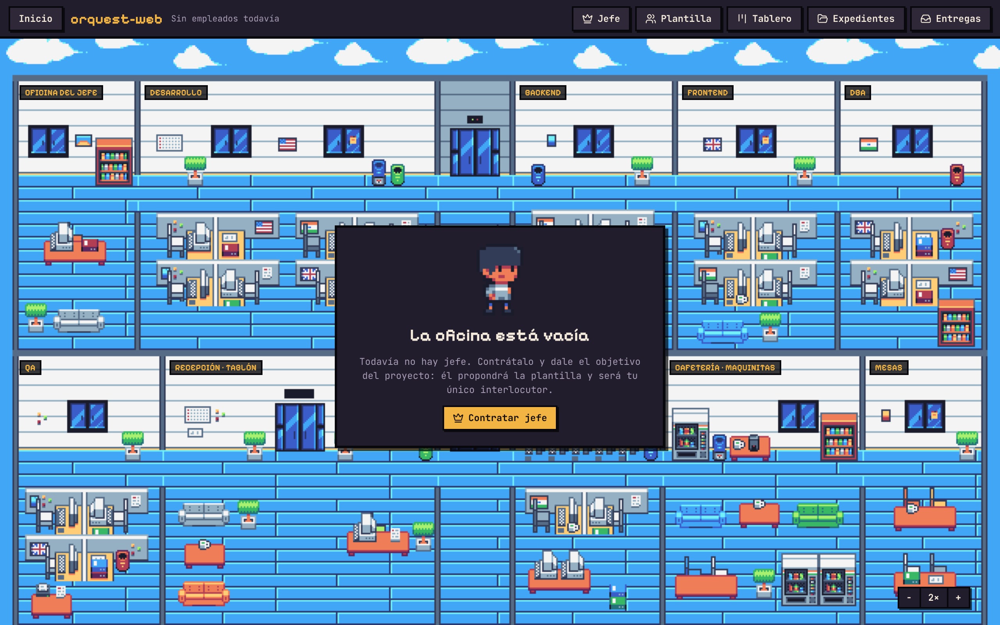
03-oficina-vacia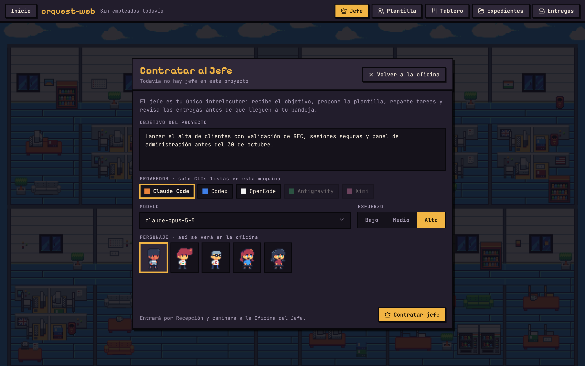
04-contratar-jefeContratas al jefe
- Se ve
- La oficina vacía con su aviso. Clic en «Contratar jefe»: se abre el panel, se escribe el objetivo, se elige el personaje.
- Voz
- En Orquest AI, tus agentes son empleados. Contratas a un jefe y le dices qué quieres.
- Movimiento
- Corte por clic. El objetivo se teclea letra por letra; el recuadro del personaje elegido se enciende.
- Origen
- La oficina de fondo es la del diseño (ver nota de arriba).
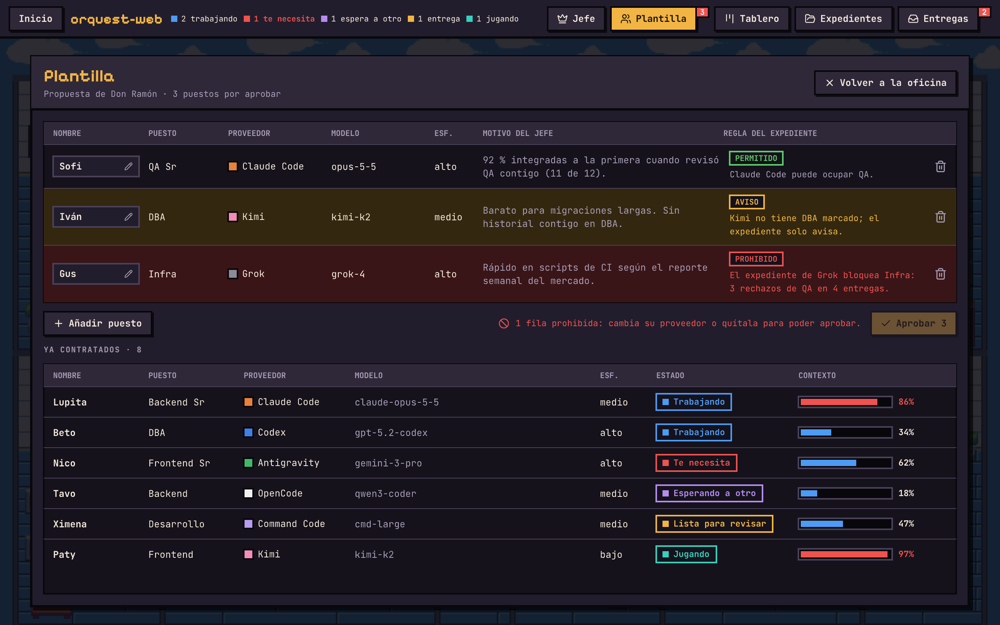
05-plantillaÉl propone al equipo
- Se ve
- Plantilla: tres puestos propuestos con su proveedor y el motivo del jefe. Las filas entran una por una: verde permitido, ámbar aviso, rojo prohibido. Abajo, los ya contratados con su estado.
- Voz
- Él propone al equipo: quién hace backend, quién frontend, quién prueba. Tú apruebas.
- Texto
- Usa las CLIs y suscripciones que ya tienes
- Movimiento
- Recorrido de arriba abajo; el cursor termina sobre «Aprobar».
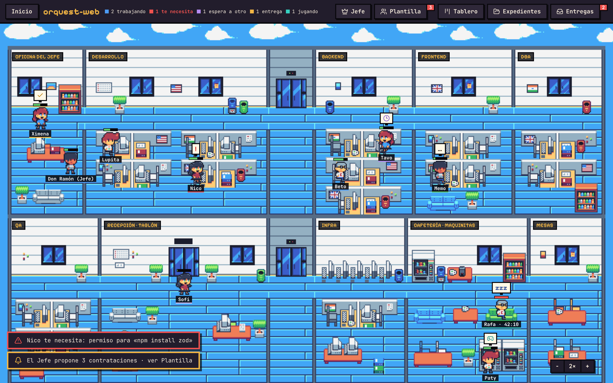
06-oficina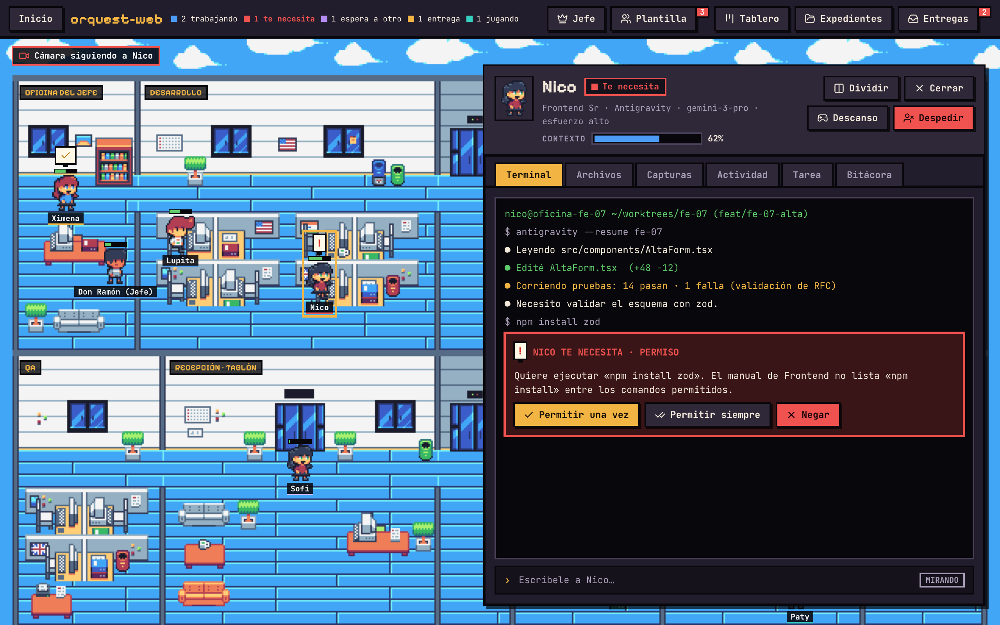
07-empleado-terminalCada animación es un estado real
- Se ve
- La oficina trabajando. Acercamiento a un globo, luego al aviso rojo «Nico te necesita». Clic: se abre su panel con la terminal y la pregunta de permiso.
- Voz
- Cada animación es un estado real. Si alguien teclea, está trabajando. Si levanta la mano, te necesita.
- Texto
- Cada animación es un estado real
- Movimiento
- Dos acercamientos cortos y un corte al panel. Es la toma más importante: aquí sube la música.
- Origen
- Oficina del diseño. Los botones «Permitir una vez / siempre / Negar» del panel no existen en la app: hoy se contesta en la terminal. Conviene taparlos o grabar esta toma de la app real.
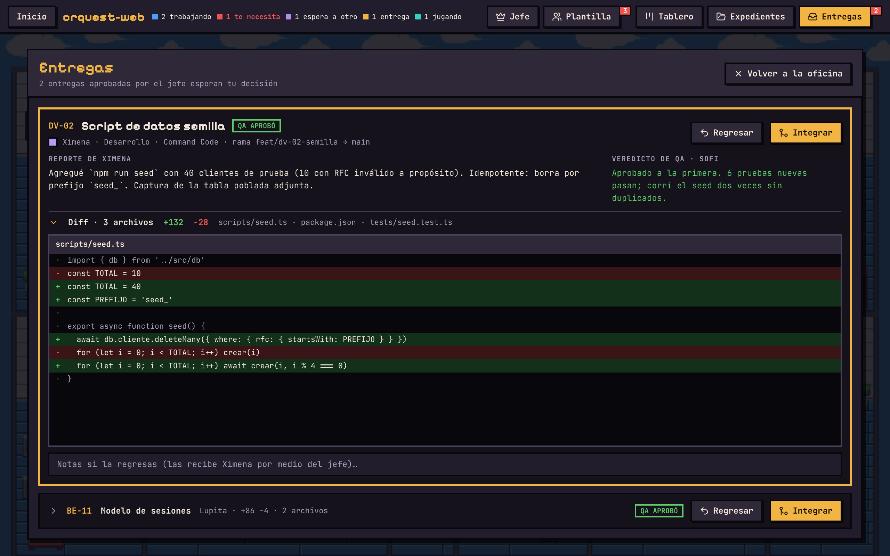
11-entregasTú decides qué entra
- Se ve
- Entregas: el reporte, el veredicto de QA en verde y el diff con líneas verdes y rojas. Clic en «Integrar».
- Voz
- Cuando terminan, te traen su entrega. El jefe revisa, QA prueba, y tú decides qué entra.
- Texto
- Tú apruebas cada integración
- Movimiento
- El diff se desliza hacia arriba como si se leyera; destello en «Integrar».
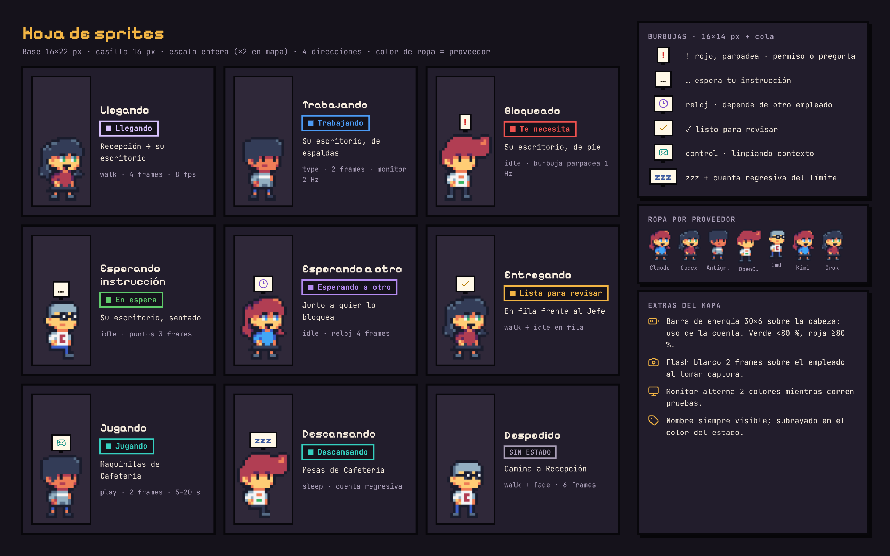
15-sprites-estados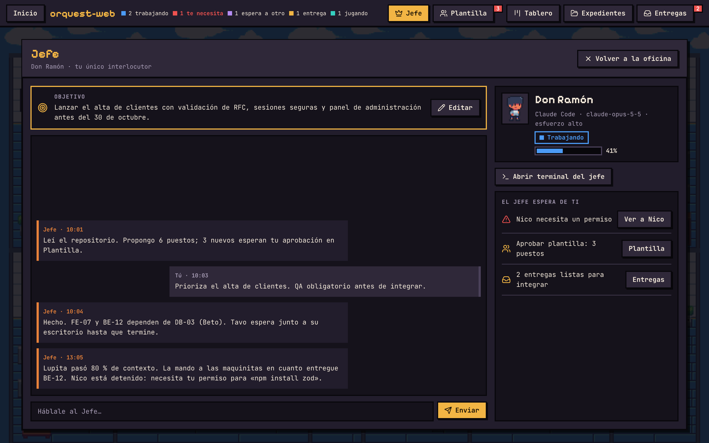
09-jefe-chatTambién descansan
- Se ve
- Montaje rápido de los estados del personaje: trabajando, esperando a otro, entregando, jugando, descansando. Un parpadeo del chat con el jefe.
- Voz
- Y sí: también descansan.
- Movimiento
- Un estado por medio segundo, al ritmo de la música. Respiro cómico antes del cierre.
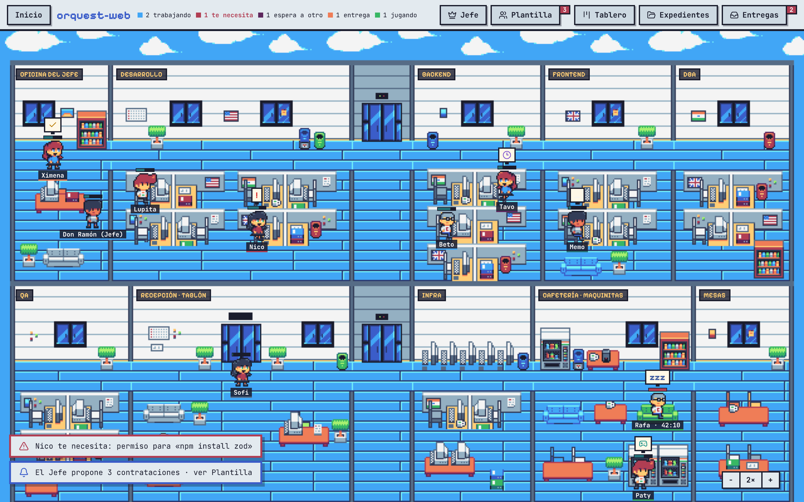
16-oficina-claroEs código abierto
- Se ve
- La oficina completa. Pasa de tema oscuro a claro con un barrido. Encima, el llamado.
- Voz
- Orquest AI es código abierto. Apenas empieza, y falta mucho por construir.
- Texto
- Código abierto · Apache 2.0
- Movimiento
- Alejamiento lento; el barrido de tema cruza de izquierda a derecha.
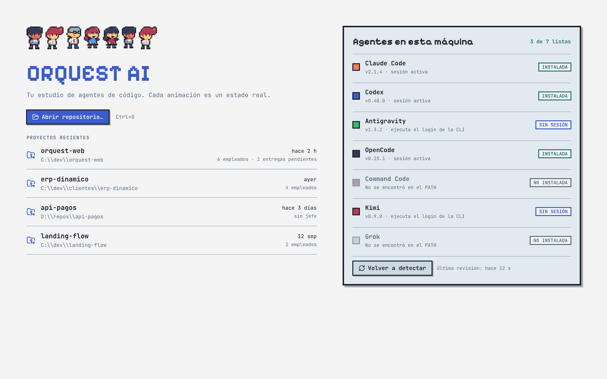
17-inicio-claroVen a construirlo
- Se ve
- La fila de personajes de Inicio, el nombre y la liga del repositorio. Uno de los personajes saluda.
- Voz
- Ven a construirlo con nosotros.
- Texto
- github.com/artuino0/Orquest-AI · Manda tu PR
- Movimiento
- Todo quieto dos segundos para que se alcance a leer la liga.
- Créditos
- Arte: Pixel Office, de 2dPig · 2dpig.itch.io/pixel-office
Guion de voz
¿Cuántas terminales tienes abiertas ahorita?
¿Y sabes qué está haciendo cada una?En Orquest AI, tus agentes son empleados. Contratas a un jefe y le dices qué quieres.
Él propone al equipo: quién hace backend, quién frontend, quién prueba. Tú apruebas.Cada animación es un estado real. Si alguien teclea, está trabajando. Si levanta la mano, te necesita.
Cuando terminan, te traen su entrega. El jefe revisa, QA prueba, y tú decides qué entra.
Y sí: también descansan.
Orquest AI es código abierto. Apenas empieza, y falta mucho por construir.
Ven a construirlo con nosotros.
Unas 95 palabras: caben en 45 segundos a ritmo tranquilo.
Versión de 20 segundos
| Tiempo | Pantalla del pen | Voz |
|---|---|---|
| 0–4 s | Terminales que caen sobre 01-inicio | Tus agentes de código ya trabajan. |
| 4–11 s | 06-oficina con acercamiento al aviso «te necesita» | Ahora puedes verlos trabajar. Cada animación es un estado real. |
| 11–16 s | 11-entregas, clic en Integrar | Tú decides qué entra. |
| 16–20 s | 17-inicio-claro con la liga | Orquest AI. Código abierto. Manda tu PR. |
Qué hay en promo/pen/
| Archivo | Pantalla del diseño | Toma |
|---|---|---|
| 01-inicio | Inicio: proyectos y agentes | 2 |
| 02-inicio-sin-agentes | Inicio sin ninguna CLI lista | reserva |
| 03-oficina-vacia | Oficina sin jefe | 3 |
| 04-contratar-jefe | Contratar al jefe, con elección de personaje | 3 |
| 05-plantilla | Plantilla: propuesta del jefe | 4 |
| 06-oficina | Oficina con el equipo trabajando | 5, 8 |
| 07-empleado-terminal | Panel del empleado, flotante, terminal | 5 |
| 08-empleado-bitacora | Panel del empleado, dividido, bitácora | reserva |
| 09-jefe-chat | Conversación con el jefe | 7 |
| 10-tablero | Tablero por departamento | reserva |
| 11-entregas | Entregas: bandeja con diff | 6 |
| 12-entregas-conflicto | Entregas con error de conflicto | reserva |
| 13-expedientes · 14-manuales | Expedientes y manuales de puesto | reserva |
| 15-sprites-estados | Hoja de estados del personaje | 7 |
| 16-oficina-claro · 17-inicio-claro | Tema claro | 8, 9 |
Todas a 2560×1600. El video es 16:9 (1920×1080): cada pantalla se recorta arriba y abajo o se recorre.
Decisiones que faltan
- Oficina del diseño o la de la app. Tomas 3, 5 y 8. Recomiendo grabar esas tres de la app real y usar el pen para los paneles, que sí coinciden.
- Voz: tuya, de alguien más o sintetizada.
- Música: hay que elegir una pieza con licencia libre y darle crédito.
- Subtítulos: quemados para redes, donde casi todo se ve sin sonido.